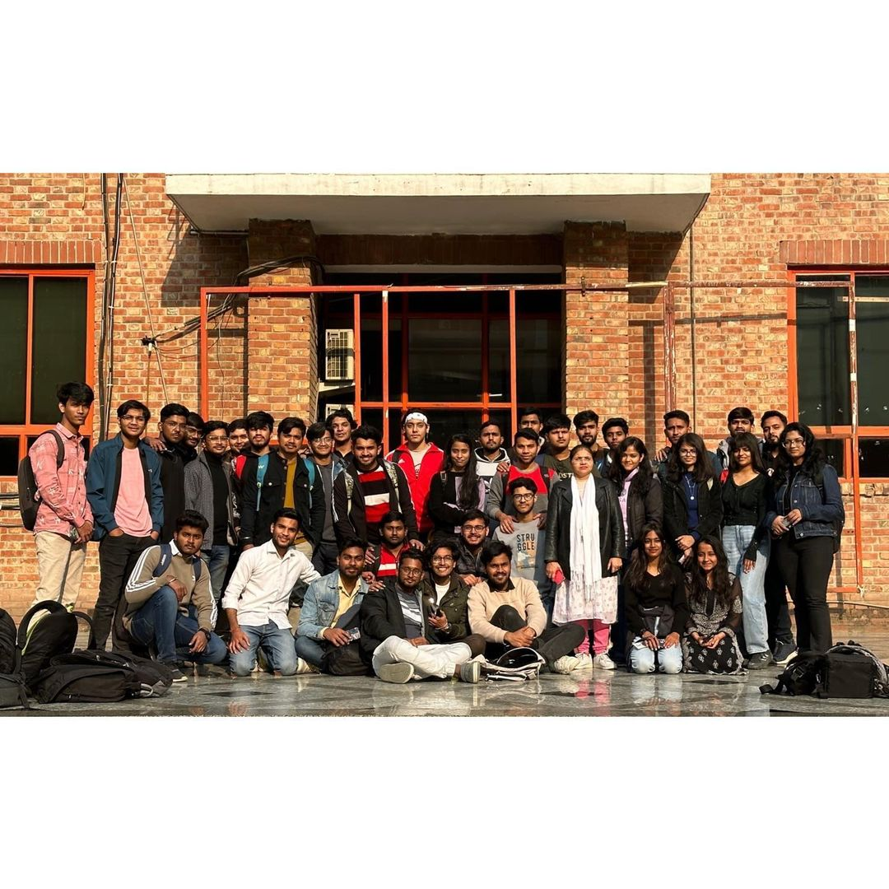

Welcome to Club Pixelance
Pixelance Club passionately dedicates itself to equipping students with the skills of photography, videography, photo editing, video editing, and cinematography. Beyond being a mere hobby during college, our mission is to empower individuals to cultivate these talents into promising careers. We are committed to fostering an environment where each member evolves into a proficient visual storyteller, blending artistry and technical expertise seamlessly.
Pixelance Club envisions a transformative journey for students within the School of Engineering and Technology at Sharda University. Through meticulously organized events, we aim to bring industry experts to the forefront, imparting invaluable knowledge. Our vision extends beyond theoretical understanding, emphasizing hands-on experiences that bridge the gap between learning and practical application. Picture a community where the art of visual expression not only enriches college years but serves as a launching pad for thriving careers in the vibrant world of photography and videography.
Previous Events
January 19th, 2023
Photo Walk: Exploring Sharda University
Explore the beauty of our Campus through your lens. Bring your camera and join us for a scenic photo walk in the campus park.
March 24, 2023
Photography Competition: Click It
Compete against the photography enthusiasts to be the best.
Photography tips
Understand Your Camera: Learn the ins and outs of your camera, including settings, modes, and features. Understanding your equipment allows you to make better decisions and capture the shots you envision.Master Composition Techniques: Familiarize yourself with composition rules like the rule of thirds, leading lines, framing, and symmetry. Composing your shots thoughtfully can greatly enhance the visual appeal of your photographs.Pay Attention to Lighting: Lighting is crucial in photography. Experiment with natural light, avoid harsh shadows, and be mindful of the direction and quality of light. Early morning or late afternoon often provides soft, warm light that can enhance your photos.Use a Tripod: A tripod can help stabilize your camera, especially in low-light conditions or when using slow shutter speeds. It ensures sharp, clear images and allows you to experiment with longer exposures.Experiment with Depth of Field: Play with your camera's aperture settings to control depth of field. A shallow depth of field (achieved with a wide aperture) can create a beautiful background blur (bokeh) and draw attention to your subject.Focus on the Subject: Make sure your main subject is in focus. Use the autofocus feature or manually focus to ensure clarity. Pay attention to the background as well to avoid distractions.Shoot in RAW Format: If your camera allows it, shoot in RAW rather than JPEG. RAW files retain more information and provide greater flexibility in post-processing, allowing you to correct exposure and white balance more effectively.Learn Basic Editing: Familiarize yourself with basic photo editing techniques. Post-processing can enhance your images by adjusting exposure, contrast, color balance, and sharpness. Software like Adobe Lightroom or similar tools can be valuable for this.Capture Candid Moments: While posed shots have their place, capturing candid moments can result in more authentic and emotionally impactful photographs. Be patient and observant, ready to capture genuine expressions and interactions.Practice Regularly: Photography is a skill that improves with practice. Take your camera with you wherever you go and experiment with different subjects, lighting conditions, and compositions. The more you practice, the more you'll refine your skills and develop your unique style.